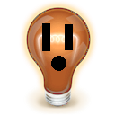

|  |
Channel-O-Rama Version Alpha 4.6.0.2α overview |
| Channel-O-Rama
has no documentation yet. |
Util-O-Rama and Channel-O-Rama
is not affiliated with or endorsed in any way, shape, or form by the Light-O-Rama®
Company or the xLights®
Organization. Do NOT contact them for support regarding Channel-O-Rama.
Channel-O-Rama may create conditions in your sequence files
which Light-O-Rama Showtime or xLights were never written
to handle. If you think you may have found a bug or issue with Light-O-Rama
Showtime or xLights while working on a sequence which has
been created or modified by Blank-O-Rama it probably isn't
their fault. Please report the problem to Doctor Wizard and
W⚡zlights software first. Please send questions, suggestions, bug
reports, and good dirty jokes to Doctor Wizard at dev.utilorama@wizlights.com
or on the GitHub repository issues page here.
Light-O-Rama and Showtime are registered trademarks of the Light-O-Rama Company.
xLights is a registered trademark of the xLights Organization.